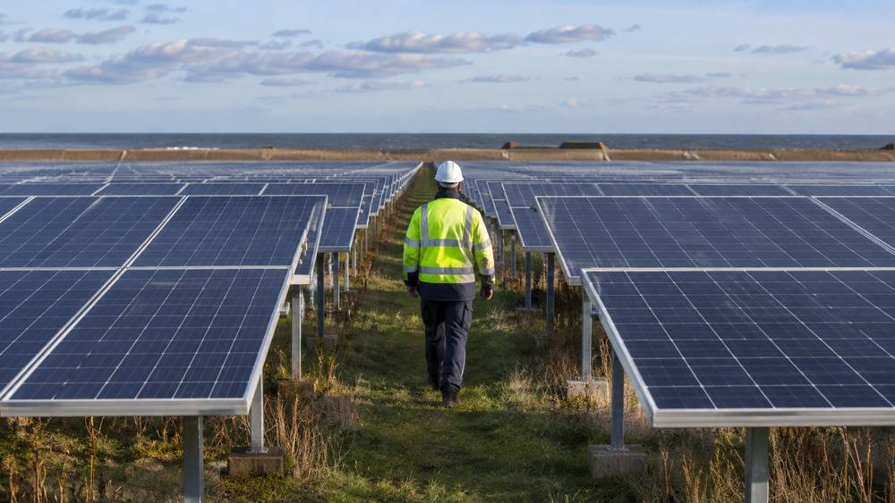

군산시민발전 비상무이사 4명 공모, 24일 마감

군산시 100% 출자 발전회사가 금융·법률·에너지·경영 분야 무보수 이사를 뽑는다. 새만금 육상 100MW를 운영하고 수상 법인 지분 5.5%를 약정했다.
군산시가 100% 출자한 군산시민발전주식회사가 비상무이사 4명을 공개 모집하며 11월 24일 오후 6시까지 지원서를 받는다. 모집 분야는 금융·법률·에너지·경영이고, 비상근·무보수로 이사회에 참석해 안건을 심의·의결한다. 「지방자치단체 출자·출연 기관의 운영에 관한 법률」 제10조나 「지방공기업법」 제60조의 임원 결격사유에 해당하면 지원할 수 없다. 접수는 11월 18일부터 주말을 뺀 근무일에 방문·이메일·우편으로 하며, 우편은 마감 시각까지 도착한 것만 인정한다. 응모자가 모집 인원의 2배에 못 미치면 다시 공고하고, 서류심사 합격자만 면접을 본다.
회사는 2020년 6월 25일 세워졌다. 새만금 산업연구용지 동쪽 1구역의 육상태양광 100MW는 사업비 1,267억 원을 들여 2021년 12월 상업운전을 시작했고, 운영 기간은 20년이다. 이 사업의 인근 주민 지원 몫은 50억7,000만 원(정책자금 90%·일반대출 10%)으로 총사업비의 4%다. 옥서면 299명, 소룡동 366명(오식도동 포함), 내초동 3명이 지원 대상으로 뽑혔고, 옥서면은 기초생활수급·차상위 가구를, 소룡동과 내초동은 차상위 가구를 포함한다. 지원금은 2022년 7월부터 해마다 1월과 7월 두 차례 나갔고, 올해 7월에는 545명이 받았다.
새만금 방조제 안쪽 수상태양광 100MW는 사업비 2,425억 원(부가세 별도)이 드는 사업으로, 효성중공업 컨소시엄 4개사가 사업시행자다. 올해 2월 특수목적법인 지분을 시민발전 5.5%, 컨소시엄 94.5%로 약정했고, 4월 22일 전기위원회가 발전사업 양수도를 인가했다. 회사는 12월 15~16일 열리는 군산 에너지 시민대학 2기 수강생 20명도 12월 7일까지 모집한다.
시민에너지 관점
시가 출자한 발전회사가 새만금에서 육상 100MW를 돌리고 인근 주민에게 반년마다 지원금을 나눠 왔지만, 수상 100MW 특수목적법인에서 시민발전 몫은 5.5%다. 영국 정부는 11월 4일 1MW 이상 신규 재생에너지 사업자가 주민에게 지분을 최대 20%까지 제안하게 하는 법안을 냈다. 이사회에 들어갈 금융·에너지 전문가는 시민 출자 몫을 늘릴 방법부터 다뤄야 한다. 군산 시민이 이번 공모와 시민대학에 손을 들어 회사의 주인 자리를 채우기를 바란다.
출처: 군산시민발전주식회사 2026-11-09 공고 제2026-16호 「군산시민발전주식회사 임원 후보 모집 공고」(임원추천위원회, 붙임 hwp) 원문 보기
출처: 군산시민발전주식회사 2026-11-21 누리집 사업안내 「육상태양광사업」(code=2_1)·「수상태양광사업」(code=2_2)·「인근주민지원사업」(code=2_3)·대표 인사말(code=1_1) 원문 보기
출처: 군산시 2026-11-09 시험/채용 「군산시민발전(주) 임원(비상무이사) 공개모집 공고」 원문 보기